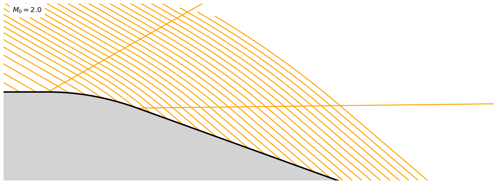

Isentropic expansion#
import numpy as np
import matplotlib.pyplot as plt
import scipy.optimize as scopt
from aerokit.common import defaultgas
from aerokit.aero import degree as deg # import trigo functions with degree unit support
#from aerokit.aero import ShockWave as sw # import functions for shockwave computation
from aerokit.aero import Supersonic as sup # import functions for steady supersonic flows
%matplotlib inline
#
#plt.rc('text', usetex=True)
sty_carac = { 'color': 'orange', 'linewidth': 2 }
sty_wall = { 'color': 'black', 'linewidth': 3 }
sty_flow = { 'color': 'green', 'linewidth': 3 }
sty_text = { 'fontsize': 14 }
On définit tout d’abord les paramètres de ce cas. Ils sont définis comme des variables globales, que l’on peut utiliser directement dans les fonctions (comme \(\gamma\) par exemple).
# definition of problem parameters
gam = 1.4 ; defaultgas.set_gamma(gam)
M0 = 2.
xmax = 1.
xmin = -1.
ymin = -.1
ymax = .5 #
# function to plot the geometry
#
def wall_angle(x):
eps=1e-4
return deg.atan((ywall(x+eps)-ywall(x-eps))/(2.*eps))
def fig(zoom=1):
global ax
fig = plt.figure(figsize=(14*zoom,8*zoom), facecolor='white')
ax = fig.add_subplot(111)
#plt.axis([xneg, length])
ax.set(aspect="equal")
ax.axis('off')
#ax.set_facecolor('white') # depends on backend
ax.set_xlim(xmin, xmax) #, xlim=[xneg, 4*length], ylim=[-.1, ymax])
ax.set_ylim(ymin, ymax) #, xlim=[xneg, 4*length], ylim=[-.1, ymax])
def plot_geom():
x = np.linspace(xmin, xmax, 101)
plt.fill(np.concatenate(([xmax, xmin], x)), np.concatenate(([ymin, ymin], ywall(x))),
facecolor='lightgray', alpha=1., zorder=100)
plt.plot(x, ywall(x), zorder=101, **sty_wall)
plt.text(xmin+.1, ymax-.1, r'$M_0={}$'.format(M0), zorder=101, backgroundcolor='white', **sty_text)
plt.tight_layout()
#
Faisceau de détente#
om0 = sup.PrandtlMeyer_Mach(M0)
mu0 = deg.asin(1./M0)
def mach_wall(x):
return sup.Mach_PrandtlMeyer(om0-wall_angle(x))
def mach(x,y):
m = M0
mw = 0.
while abs(m-mw) > 1.e-6:
th = om0 - sup.PrandtlMeyer_Mach(m) #C- : om0 + th0 = om1 + th1
thpmu = th + deg.asin(1./m)
slope = deg.tan(thpmu)
# solve intersection with wall: y + slope*(x'-x)=ywall(x')
xwall = scopt.fsolve(lambda xw: y-ywall(xw)+slope*(xw-x), x-y/slope)
mw = mach_wall(xwall)
m = .5*(m+mw)
return m
def plot_CP_wall(x):
for xw in x:
slope = deg.tan(wall_angle(xw)+deg.asin(1./mach_wall(xw)))
#print(xw, slope)
plt.plot([xw, xmax], [ywall(xw), ywall(xw)+slope*(xmax-xw)], **sty_carac)
def plot_CP(n=51):
plot_CP_wall(np.linspace(xmin, xmax, n))
def fill_expansion(): # tracé des caractéristiques de la détente
plt.fill([xmax, 0, xmax], [xmax*deg.tan(wang1+mu1), 0, xmax*deg.tan(wang0+mu0)],
facecolor=sty_carac['color'], alpha=.2)
integration trajectoire et C-#
def flow_prop(x, y):
m = mach(x, y)
th = om0 - sup.PrandtlMeyer_Mach(m)
mu = deg.asin(1./m)
prop = {'ang': th, 'C+': th+mu, 'C-': th-mu}
return prop
def integ(x, y, ctype, smin, smax, npts=100):
def step(x0, y0, ds, ang):
return x0+ds*deg.cos(ang), y0+ds*deg.sin(ang)
trajx = np.zeros(npts+1)
trajy = np.zeros(npts+1)
nforw = int(npts * smax/(smax-smin))
nback = npts-nforw
#print(smin, smax, nforw, nback)
sx = x
sy = y
trajx[nback] = sx ; trajy[nback] = sy
# backward
if nback>0:
ds = smin/nback
for i in range(nback):
px, py = step(sx, sy, .5*ds, flow_prop(sx, sy)[ctype]) # RK2 / predictor
sx, sy = step(sx, sy, ds, flow_prop(px, py)[ctype]) # RK2 / final step
trajx[nback-i-1] = sx ; trajy[nback-i-1] = sy
# forward
if nforw>0:
ds = smax/nforw
sx = x
sy = y
for i in range(nforw):
px, py = step(sx, sy, .5*ds, flow_prop(sx, sy)[ctype]) # RK2 / predictor
sx, sy = step(sx, sy, ds, flow_prop(px, py)[ctype]) # RK2 / final step
trajx[nback+i+1] = sx ; trajy[nback+i+1] = sy
return trajx, trajy
#fig()
def plot_CM(n=31, length=-1.):
x = np.linspace(xmin, xmax, n)
for xw in x:
xcm, ycm = integ(xw, ywall(xw), 'C-', length, 0.)
plt.plot(xcm, ycm, **sty_carac)
# plot_CM()
# #
# x0 = -.9 ; y0 = .1
# CTx, CTy = integ(x0, y0, 'ang', 0., 3.)
# plt.plot(CTx, CTy, **sty_flow)
# x0 = -.9 ; y0 = .12
# CTx, CTy = integ(x0, y0, 'ang', 0., 3.)
# plt.plot(CTx, CTy, **sty_flow)
# #
# plot_geom()
détente progressive#
# definition of problem parameters
M0 = 2.
xmin = -.5
xmax = 5.
ymin = -1.
ymax = 1. #
# function to plot the geometry
#
def ywall(x):
slope = deg.tan(-20.)
return np.where(x<0, 0., np.where(x<1., x**2*slope/2., slope*(x-.5)))
fig()
#plot_CP()
plot_CP_wall([0., 1.])
plot_CM(length=-4.)
x0 = -.1 ; y0 = .4
CTx, CTy = integ(x0, y0, 'ang', 0., 4.)
#plt.plot(CTx, CTy, **sty_flow)
plot_geom()

compression#
# definition of problem parameters
M0 = 2.
xmin = -.5
xmax = 3.
ymin = -.1
ymax = 1.2 #
# function to plot the geometry
#
def ywall(x):
slope = deg.tan(15.)
return np.where(x<0, 0., np.where(x<1., x**2*slope/2., slope*(x-.5)))
fig()
plot_CP()
#plot_CP_wall([0., 1.])
x0 = -.2 ; y0 = .2
CTx, CTy = integ(x0, y0, 'ang', 0., 4.)
#plt.plot(CTx, CTy, **sty_flow)
plot_geom()
/tmp/ipykernel_2272/2015979149.py:15: RuntimeWarning: The iteration is not making good progress, as measured by the
improvement from the last ten iterations.
xwall = scopt.fsolve(lambda xw: y-ywall(xw)+slope*(xw-x), x-y/slope)